A strong name in the Palantir and Lattice spirit
The founder asked for a name with the weight of Palantir or Lattice, drawn from Greek myth and other strong single words, for the offline desktop command center now called Stratlas. 62 names were screened. Six made the shortlist and three went to full identity work: Almagest, Ziggurat and Akkad.
This is a quick screen, not legal clearance. Collisions were checked with web searches on 5 Oct 2026. Domain status comes from live RDAP queries to the .com, .ai and .io registries. The public trademark registers (WIPO, USPTO, EUIPO and the mirrors) need JavaScript or refused automated access, so trademark evidence is from web results only. A trademark attorney must clear the pick in classes 9 and 42 in Kuwait, the UAE, KSA, the EU and the US before anything is bought or printed.
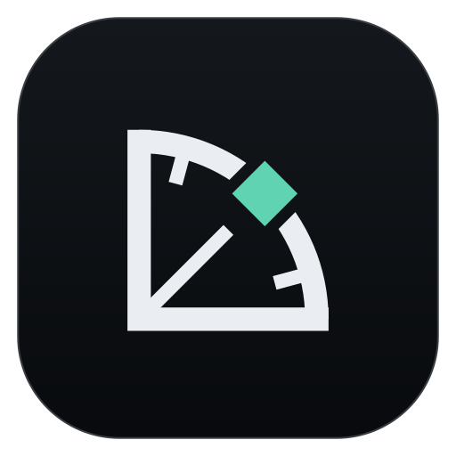
Almagest, with the Quadrant mark
Almagest is the name Arab astronomers gave Ptolemy's great catalogue of the sky: al-Majisṭī, "the greatest". It is a Greek work carried by Arabic, so it fits a Kuwait company selling to GCC government and industry. It means what the product does: it brings every observation of a place into one ordered, authoritative record. It sounds large and serious, like Palantir. It has the cleanest collision screen of the three finalists.
The Quadrant mark is the graduated quadrant used to measure the height of stars, with a sight line and the sighted point. It also reads as a sensor sweep with one contact, which is the operating-picture idea. It is distinct from Palantir, Anduril, Esri, DJI and Pix4D.
Before committing: get counsel to clear the name against Almagest Space Corporation (satellite data relay, US). Secure getalmagest.com or almagestapp.com, plus .ae, .sa and .com.kw, and test pronunciation with five Arabic and five English speakers. The bare almagest.com, .ai and .io are all registered. If the founder wants a shorter, harder name, Akkad is the alternative, but it has more store clutter and a thinner story.
Three finalists, ranked
Each finalist has a primary and an alternate mark, monochrome, dark and light versions, a hand-built wordmark, an app icon set (16 to 1024 px) and a favicon. Each was also tested at small sizes and in seven product contexts.
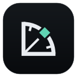
Ptolemy's catalogue of the sky, named in Arabic: the one authoritative record of everything observed.
- Collision
- LOW to MEDIUM Almagest Space (satellite data relay); old open-source and CMS tools. No app-store or class 9 geospatial use found.
- Domains
- .com, .ai and .io taken. getalmagest.com, almagestapp.com, almagesthq.com and usealmagest.com are free.
- Key risk
- Three syllables; some will say "al-MAG-est". Sounds scholarly unless the brand stays hard-edged.
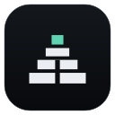
The stepped temple-observatory of Mesopotamia: layers built tier on tier, with a watch on the sky at the top.
- Collision
- MEDIUM "Ziggurat" and "Ziggurat 2" games on the Microsoft Store and Xbox, an iOS game and a typeface. No software or geospatial use.
- Domains
- .com, .ai and .io taken. getziggurat.com, zigguratapp.com and ziggurathq.com are free.
- Key risk
- A common noun with a playful "zig". The games share the Store namespace.
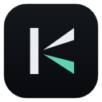
The first empire, the cradle of written record. In Arabic, akkada means "confirmed".
- Collision
- MEDIUM Several small App Store apps called Akkad (education, inventory, pest control), Akkad Technology (hospital and learning systems) and Akkadian Labs. No geospatial or drone use.
- Domains
- .com, .ai, .io, getakkad and akkadhq are taken. akkadapp.com, useakkad.com and akkadsystems.com are free.
- Key risk
- Also a known Arab surname, and akādu reads as "I almost". Thin "seeing" story.
Almagest
Story
Ptolemy compiled the Mathēmatikē Syntaxis, the catalogue of 1,022 stars and the model that predicted their motion, around 150 AD. Arab scholars translated it and called it al-Majisṭī, "the greatest". Europe took the Arabic name as Almagest. For this product it means one authoritative record, built from many observations, that tells you exactly where everything is.
Arabic and GCC: المجسطي is known to educated Arabic speakers, it starts with the Arabic article, and it has no hard sounds. No unfortunate reading was found.
Checks
- Software
- Almagest Space Corp. (US, satellite data relay with E-band links, founded 2022): adjacent to earth-observation data, not desktop software. Almagest open-source media database (Princeton, 2004); Almagest Technologies (HK, headless CMS, unfunded); old DVD and codec utilities.
- Defence and geo
- None found under the name.
- Trademarks
- No class 9 or 42 mark found in web results; registers not machine-readable. Clear Almagest Space first.
- Stores
- No "Almagest" app on the Microsoft Store or the Mac App Store found.
- Domains
- almagest.com / .ai / .io registered. Free: getalmagest.com, almagestapp.com, almagesthq.com, usealmagest.com, almagestsystems.com.
- Handles
- github.com/almagest exists (an individual). Others not checked.
Symbols: primary "Quadrant" and alternate "Bearing"
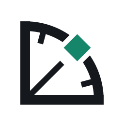
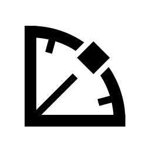
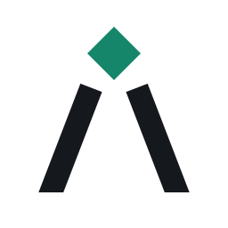
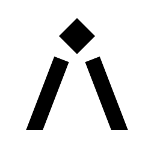
Bearing (two sight lines meeting at the sighted point) was the first primary. Next to Anduril's silhouette it read as the same A-form at 16 px, so it moved to alternate and Quadrant took its place.
Lockups and wordmark
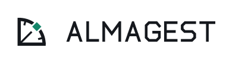
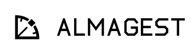
App icon set and favicon (real PNGs, shown at 1x)
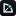
16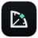
48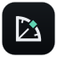
64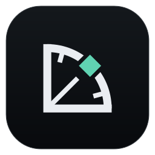
256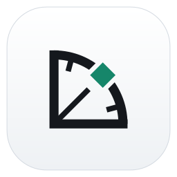
light tile512 and 1024 px are in assets/almagest/png/. Sizes 16 to 32 px use a hinted cut: heavier strokes, no ticks, full-bleed tile. favicon.ico holds 16, 32 and 48 px.
Visual checks
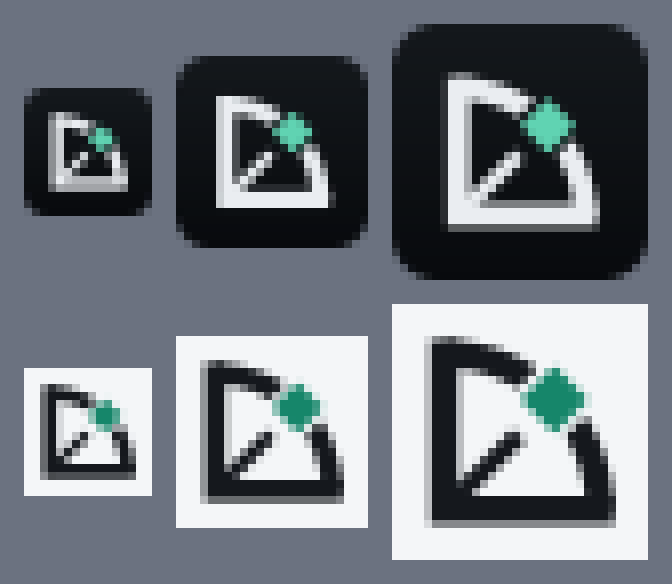
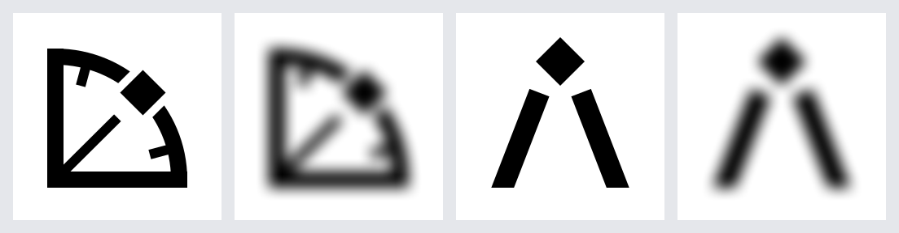
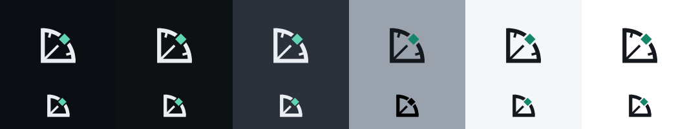
In context
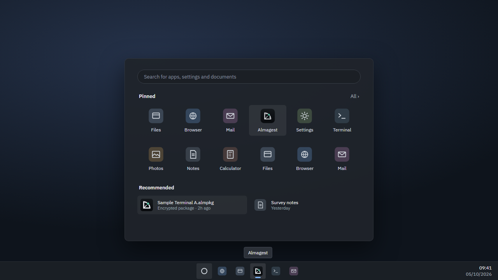
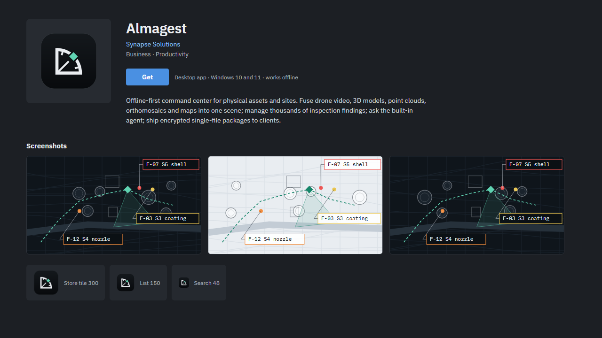
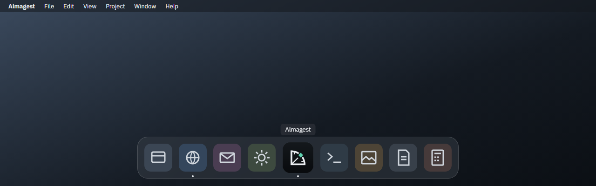
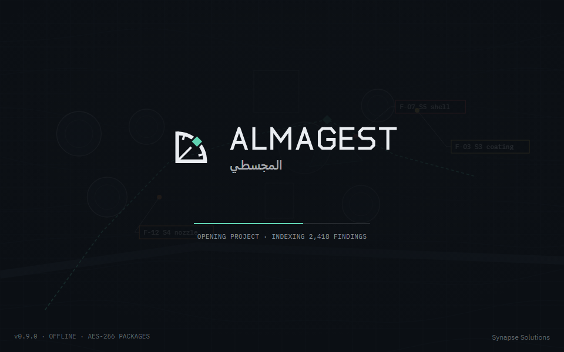
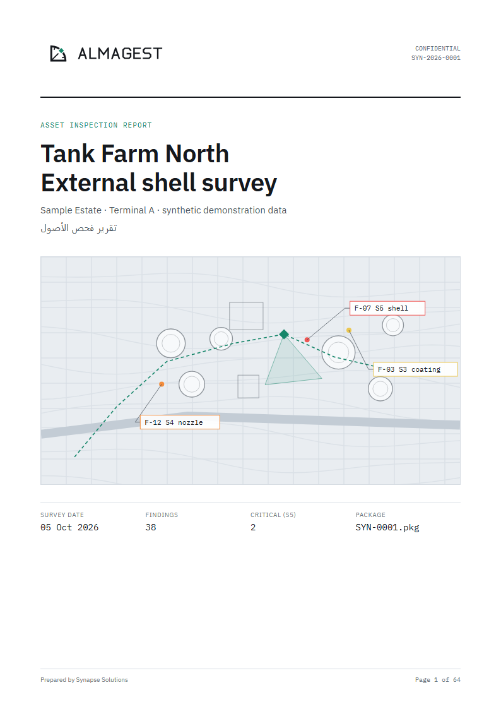
Verdict: first. The best name; the mark is good, not yet great
- Strengths: the strongest story of the round; it is native to both Greek and Arabic; it has the cleanest screen; and the mark is distinct from every reference brand.
- Weakness: three syllables and the stress is not obvious ("AL-ma-jest" is right). Put it in the onboarding line and the deck.
- Weakness: it can sound academic. Keep the brand hard-edged (the chamfered wordmark, the mono telemetry type) so it reads as a system, not a library.
- Weakness: at 16 px the Quadrant reads as "sector with a dot". It is legible but not as instant as Ziggurat's tiers.
- Risk: Almagest Space works in space-data infrastructure. The classes probably differ, but counsel must check.
Ziggurat
Story
Mesopotamian ziggurats were built as terraces, each tier on the one below, and the priests watched and recorded the sky from the top. The name carries the layered idea the founder already chose in round 2 (the R5 layered mark), and it is regional heritage: زقورة is a familiar word in Iraq and across the Gulf.
Arabic and GCC: easy to say, with no unfortunate reading. Ancient-temple imagery is neutral in a heritage register; it is not a deity.
Checks
- Software
- Ziggurat (AI equities assistant, Berkeley): closed. Square's "Ziggurat" iOS app architecture (an engineering blog term). Hoefler&Co "Ziggurat" typeface.
- Defence and geo
- None found.
- Trademarks
- Web results show none in classes 9 and 42 for software. The games (Milkstone Studios) probably hold class 9 for games.
- Stores
- Conflict: "Ziggurat" and "Ziggurat 2" games on the Microsoft Store and Xbox; a ZiGGURAT game on the iOS App Store.
- Domains
- ziggurat.com / .ai / .io registered. Free: getziggurat.com, zigguratapp.com, ziggurathq.com.
- Handles
- github.com/ziggurat exists. Others not checked.
Symbols: primary "Tiers" and alternate "Stair Z"
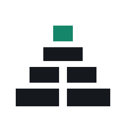
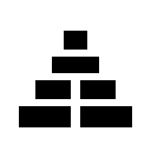
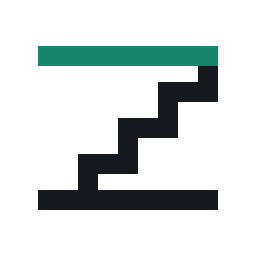
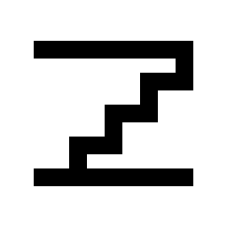
Lockups and wordmark
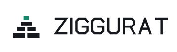
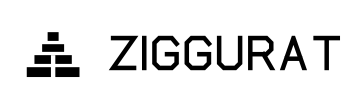
App icon set and favicon (real PNGs, shown at 1x)
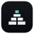
48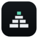
64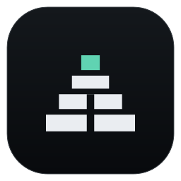
256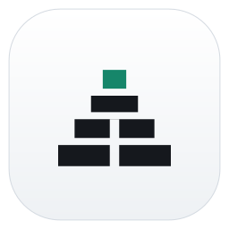
light tile favicon
faviconVisual checks
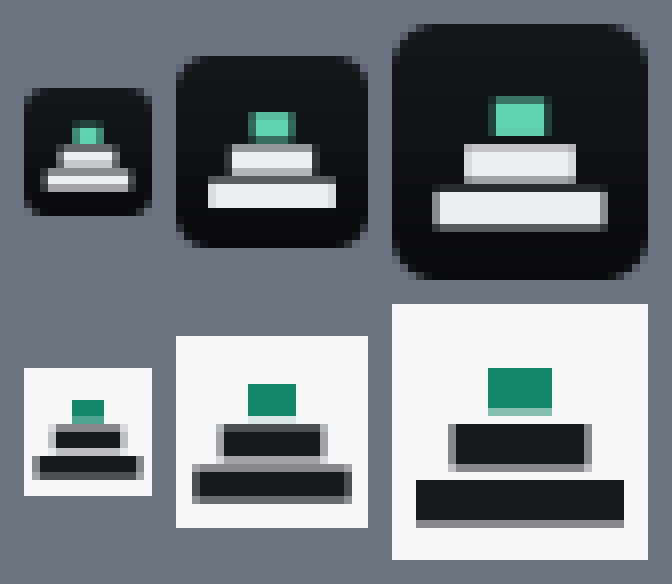
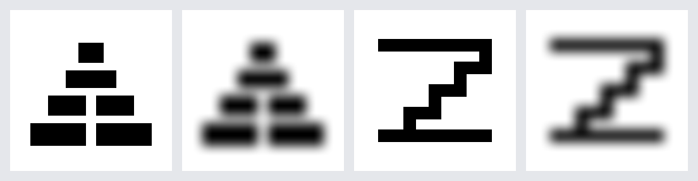
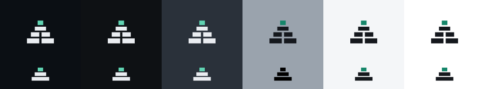
In context
Verdict: second. The best mark; the name is weaker
- Strengths: it is the clearest icon at 16 px in this round. It continues the layered idea the founder already picked, and it is regional and easy in Arabic.
- Weakness: "Ziggurat" is a dictionary noun with a light, playful first syllable. It has less menace than Palantir or Anduril.
- Weakness: the Tiers mark can read as a podium, a stacked bar chart or a generic pyramid, and stepped pyramids are common in logos.
- Risk: the same-name games on the Microsoft Store and Xbox. Store search will mix them, and the publisher may hold class 9 rights.
Akkad
Story
Akkad was the first empire, about 2300 BC, and its scribes made cuneiform the written record of a whole region. The name is two hard syllables, the closest in sound to Palantir and Anduril. In Arabic, أكّد (akkada) means "he confirmed" or "verified", which suits inspection findings that have to stand up.
Arabic and GCC: easy to say. It is also a known Arab surname, and أكاد without the shadda reads as "I almost", which is harmless but should be tested.
Checks
- Software
- Akkad Technology Co. (hospital and learning systems); Akkad Consultants; Akkadian Labs (collaboration software); AKKAD TECHNOLOGY LTD (UK, dissolved 2019).
- Defence and geo
- None found.
- Trademarks
- Only SALON AKKAD (retail) was seen in web results.
- Stores
- Clutter: Akkad (education, iPad), Akkad Inventory Management and Akkad Pest Control on the App Store. None on the Microsoft Store found.
- Domains
- akkad.com / .ai / .io, getakkad.com and akkadhq.com are registered. Free: akkadapp.com, useakkad.com, akkadsystems.com.
- Handles
- github.com/akkad exists. Others not checked.
Symbols: primary "Stylus K" and alternate "Triangulate"
Lockups and wordmark
App icon set and favicon (real PNGs, shown at 1x)
Visual checks
In context
Verdict: third. The strongest sound; the thinnest fit
- Strengths: short, hard and memorable, the closest to Palantir in feel. The Stylus K monogram is bold and reads at 16 px. The Arabic "confirmed" reading is a gift for an inspection product.
- Weakness: the story is about record and empire, not seeing or places. It needs more explaining than Almagest.
- Weakness: the alternate Triangulate mark reads as three arrows converging, like a "collapse" UI icon. It is the weakest mark in the round.
- Risk: crowded with small Arab-market apps on the App Store; the "empire" connotation may not suit government buyers; and it is a surname.
Distinctness against reference brands
The three primary symbols at 96, 32 and 16 px beside rough, neutral silhouettes of the brands the product will be compared with. The silhouettes are deliberately crude approximations drawn for this test, not those companies' artwork.
| Reference | What their mark is | Almagest Quadrant | Ziggurat Tiers | Akkad Stylus K |
|---|---|---|---|---|
| Palantir | A ring above a curved base (the seeing stone). Product names: Gotham, Foundry, Apollo, AIP. | Distinct. It has an arc but no ring; it is a sector with a sight line. | Distinct | Distinct |
| Anduril / Lattice | An angular A-form emblem and a wide-tracked wordmark. Product names: Lattice, Arsenal. | Distinct. The Bearing alternate is too close (an A-form) and should not be used as primary. | Distinct | Distinct, though the wide-tracked caps wordmark sits in the same family. |
| Esri | A globe with sweeping arcs (ArcGIS). | Different: a quarter circle with straight edges. | Distinct | Distinct |
| DJI | A heavy lowercase wordmark. Products: Terra, FlightHub. | Distinct | Distinct | Distinct |
| Pix4D | A wordmark with pixel blocks; product names start with PIX4D. | Distinct | Some kinship: rectilinear blocks | Distinct |
Shortlist of six
These names passed the Arabic screen and had no conflict in drones, geospatial, defence, oil and gas, or AI operations software. Three went forward.
| Name | Idea | Why it stayed | Why it stopped (or not) | Score /25 |
|---|---|---|---|---|
| Almagest | Ptolemy's catalogue of the sky, named in Arabic | Best story, native to Greek and Arabic, cleanest screen | Finalist 1 | 21 |
| Ziggurat | Stepped temple-observatory | Layers plus a watch on the sky; regional; best icon | Finalist 2: Store games share the name | 19 |
| Akkad | First empire; Arabic "confirmed" | Short, hard, Palantir-like sound | Finalist 3: small app clutter, thin fit | 18 |
| Seshat | Egyptian goddess of records and of stretching the cord to lay out buildings | Exact fit: recording and measuring | Soft sound; open-source audio annotation tool and a web3 firm use the name | 16 |
| Orrery | Clockwork model of the sky; everything moving in sync | Good metaphor for the fused scene and timeline | Weak sound (two r's); many Orrery apps on the Mac App Store; every fallback domain taken | 14 |
| Nabu | Mesopotamian god of scribes, keeper of the Tablet of Destinies | Short; record-keeper | Shares a root with nabī (prophet), a religious-adjacent risk; Nabu customs AI; reads as "Naboo"; all domains taken | 14 |
Longlist: 62 names screened
Scores run from 1 to 5 on five axes. S is strength and memorability, F is fit to the product, C is collision safety (5 means clean), D is domain options and A is Arabic and GCC fit. "Known" means the conflict is common industry knowledge and was not searched again. Domain codes come from RDAP: T means registered and f means free, in this order: .com, .ai, .io, get-.com, -hq.com, -app.com. Click a column header to sort. A hard conflict (a collision in our field, or a bad Arabic reading) drops a name whatever its total.
| Name | Source | Idea | Arabic and GCC | Collision evidence | Domains | S | F | C | D | A | Total | Verdict |
|---|
Names the founder might expect, and why they are out
Method and limits
What was done
We generated 62 names from Greek and Mesopotamian myth, Egyptian and Arabian legend, Norse and Tolkien sources, and strong real or coined words, avoiding names already used in rounds 1 and 2. Each name was screened for Arabic meaning, pronunciation (Arabic has no p or v) and religious or unfortunate readings. Each survivor was searched against software, defence, geospatial, drone, AI and oil and gas companies, and against the Microsoft Store and the Mac App Store. Domains were checked live with RDAP (Verisign for .com, Identity Digital for .ai and .io).
Marks were drawn by hand as SVG on a 64-unit grid. Wordmarks use a custom chamfered monoline alphabet on a 10-unit cap height, so they are outlined paths and need no font. PNGs were rendered with sharp and mockups with headless Chromium (Playwright). Every image on this page was looked at during review, and two marks were redrawn as a result: Almagest's A-form and Akkad's wedges.
Limits and next steps
No trademark register could be queried directly; WIPO, USPTO, EUIPO and the Justia and uspto.report mirrors refused automated access. The social handles beyond GitHub, and the .ae, .sa and .com.kw domains, were not checked. Nothing was registered, bought or submitted.
Next steps: (1) the founder picks one; (2) counsel runs a full clearance in classes 9 and 42 in KW, AE, SA, EU and US; (3) secure the fallback .com, the .ae and .sa, and the handles; (4) run a pronunciation test with ten people; (5) then update packages/brand. That package was not touched in this round.
Files
assets/<name>/svg/ (symbol, lockup and wordmark in dark, light and mono; app icon masters) · png/icon-16 to 1024 · favicon.svg/.ico/-16/-32 · tests/ · mockups/ · build/ (generator scripts: marks.mjs, build.mjs, mockups.mjs) · rdap-results.txt
Sources (web, 5 Oct 2026)
- Almagest Space (PitchBook)
- Almagest open-source database (CNI)
- Almagest Technologies (Tracxn)
- Ziggurat (Crunchbase)
- Ziggurat game (Microsoft Store / Xbox)
- Ziggurat iOS architecture (Square)
- Akkad education app (App Store)
- Akkad Inventory Management (App Store)
- Akkad Technology Co.
- Akkadian Labs
- ARGUS (Altus Group)
- ARGUS-IS (Wikipedia)
- ARGUS Interception C-UAS
- Aegis weapon system
- Aegis counter-UAS
- Athena AI geospatial (USMC)
- AtlasAI
- Kairos Aerospace
- Pharos AI defence platform
- Pharos Platforms
- Ouranos drone
- ARCHYTAS drone
- Koios VTOL UAV (Callen-Lenz)
- Tethys Oil (Oman)
- THeMIS UGV
- PHANES RESEARCH filing (drone software)
- Astraea EarthAI
- Lynceus AI
- Theōros AI annotation
- Zarqa LLM (SingularityNET)
- Lamassu Bitcoin ATMs
- Lamassu Oil Services
- Nisaba Technologies
- Saker Scout drone
- Horus mobile mapping
- Horus Smart Detections
- Dioptra AI
- Hemera LiDAR software (Draper)
- Aethon robotics
- Keraunos lightning intelligence
- Eratos data platform
- Akros geospatial
- Kastra AI
- Castellan platform
- Graticule mapping software
- Arges Pro (App Store)
- Orrery.ai
- Nabu customs AI
- Seshat annotation (GitHub)
- Koios Intelligence
- Ephor
- Dodona Analytics
- Lelantos gas sensors
- Palantir 10-K (products)
- Anduril (Lattice, Arsenal)
- Pix4D software suite